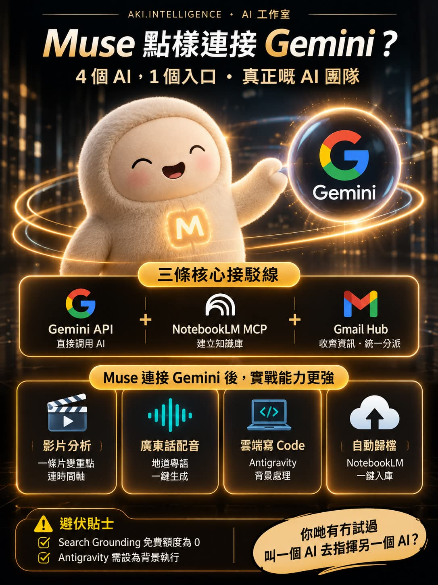

Threads｜Hermes、Muse、Grok Bot 協作產出 NotebookLM 風格解說影片：從「模型比武」轉向角色分工
一句話摘要
這則貼文把「多個 AI 工具誰勝誰負」轉成更實用的問題：能否讓不同工具各自承擔合適的工作，合力完成一個有驗收標準的影音任務？
貼文可確認的內容
作者 dankopeng 表示，Hermes、Muse 與 Grok Bot 最後並非進行「大比武」，而是分工合作完成一項工作：製作 NotebookLM 風格的解說影片。
貼文沒有公開各工具的具體提示詞、交接格式、影片腳本、使用版本、成本、執行時間或最終成品連結。因此，下列角色配置是可採用的工作流設計，不是對該貼文實作細節的還原。
可複用的分工框架
- **研究與任務編排**：先由能管理來源、檔案與任務狀態的 agent 建立素材清單、研究摘要、腳本規格與驗收條件。
- **發想與腳本深化**：讓擅長長文理解或創意規劃的模型提出敘事結構、旁白草稿、轉場與畫面提示；輸出必須固定為可交接格式。
- **瀏覽器／雲端操作**：若需要在特定網站建立素材、測試工具或處理帳號流程，隔離到明確權限範圍的瀏覽器或雲端環境，避免把私人登入資訊散落於多個 agent。
- **合成與人工驗收**：將旁白、字幕、畫面、引用來源與音樂授權整合後，由人檢查事實正確性、引用、節奏、發音、字幕同步與輸出規格。
交接時最重要的不是「聊天紀錄」
多工具協作最容易失敗於上下文遺失或責任不清。每一段交接至少應有：
- 任務目標與受眾。
- 已確認來源、不可杜撰的事實，以及仍待查核的主張。
- 輸入素材位置與可用權限；避免直接複製敏感帳密或私人文件。
- 預期輸出格式，例如 YAML／JSON 規格、分鏡表、旁白稿與檔名。
- 驗收條件、負責人與失敗時的回退方式。
NotebookLM 風格不等於可直接模仿
「NotebookLM 風格」可以是以來源為中心、雙人對談、條理化摘要與音訊解說的創作參考；但不應冒充 Google 產品輸出，也不可忽略來源著作權、聲音肖像權、音樂及影片素材授權。涉及醫療、財務、法律或公共議題時，必須保留可回查來源並進行人工審稿。
實作前的安全與成本檢核
- 確認各服務的資料使用政策、訓練選項與保存期限。
- 不將 API 金鑰、帳密、學員資料或未公開影片直接交給不受控的第三方 agent。
- 記錄模型／工具版本、訂閱費、額外 API 或雲端執行成本。
- 先以 30–60 秒樣片驗證腳本、旁白、字幕與畫面，再擴大到完整影片。
2026-11-22 補充：aki.survival 的 Muse → Gemini 與 NotebookLM 工作流
另一作者 aki.survival 分享不同的多 Agent 實例：據其本人描述，Muse 透過 Gemini API 交辦影片分析及語音生成，透過 NotebookLM MCP 建立與填入知識庫，並以 Gmail Hub 接收其他 AI 的結果。這是作者自述，不代表上述 dankopeng 案例使用相同配置；公開內容未揭露連接器實作、程式碼、完整設定、模型精確 ID 或執行紀錄，無法核實實際整合及可靠性。
作者稱一次分析 10 分鐘影片約 55,000 tokens、生成約 30 秒粵語 WAV，並稱當時 TTS 每日 10 次、Antigravity 每日 100 次；這些是單一帳號與時間點的觀察，並非一般保證。作者另提其 Gemini 3.x 免費 Search Grounding 額度為零，建議耗時工作非同步及避免同時派單；是否支援非同步，須以實際介面為準。作者未公開完整可複製提示詞或可重現的連接配置，不可將摘要冒充原始指令。
Google 官方文件於 2026-11-22 查核：Gemini 3.1 Flash-Lite 的 API 免費層列有免費輸入、輸出，但 Google Search Grounding 免費層不提供；AI Studio 可供測試不等同免費 API 支援。Google 表示限額按專案而非金鑰、按模型及方案而異，日額依太平洋時間午夜重置，實際額度須看帳戶；無法由影片 token 或作者數字推定所有人的額度。台灣列於 Google AI Studio 和 Gemini API 支援地區；香港未列在該清單，這不代表 Muse 或其他 Google 產品全部不可用，也不能推定個人資格。
依 Google API 條款，非付費服務的輸入及輸出可能用於產品和模型改進，人工審查前會與帳號、金鑰和專案解除關聯；不應提交敏感、機密或個人資料。已啟用 Cloud Billing 與特定地區另有不同資料條款，不等於零保留；Google 搜尋接地另有 30 天留存規則。Gmail、NotebookLM、Muse 和第三方 MCP 各有獨立權限與政策，需逐一核對；郵件與寫入操作保留人工核准，勿將金鑰貼到聊天或公開文件。
原帖圖片是作者 AI 內容圖卡，顯示三條接駁線及四項作者聲稱的能力；已檢視可取得的 1086×1448 公開壓縮圖，未見明顯個資或憑證；重用授權未確認。圖卡不是實際接通紀錄。本次未安裝、設定、登入、取得金鑰、授權或實測。

使用者分享：https://www.threads.com/share/BATkfjEOJZ
原帖：https://www.threads.com/@aki.survival/post/DgCaj_ZkTk2
作者續文：https://www.threads.com/@aki.survival/post/DgCaj8iEfJd
作者測試續文：https://www.threads.com/@aki.survival/post/DgCaj94EXrq
作者知識庫續文：https://www.threads.com/@aki.survival/post/DgCaj9Ykc9q
作者流程續文：https://www.threads.com/@aki.survival/post/DgCaj8rERgs
作者限制續文：https://www.threads.com/@aki.survival/post/DgCaj8MkRMa
Google 價格：https://aistudio.google.com/docs/pricing
Google 限額：https://aistudio.google.com/docs/rate-limits
Google 地區：https://aistudio.google.com/docs/available-regions
Google 條款：https://aistudio.google.com/docs/terms
原始與擷取紀錄
- Threads 原貼文：https://www.threads.com/@dankopeng/post/DeUA211ktuX
- 本文擷取紀錄：source-archive/2026-10-10-threads-dankopeng-hermes-muse-grok-notebooklm-collaboration.json